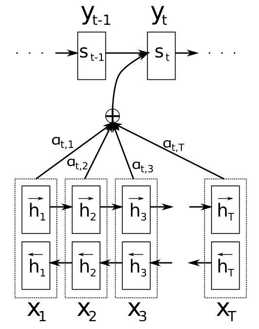
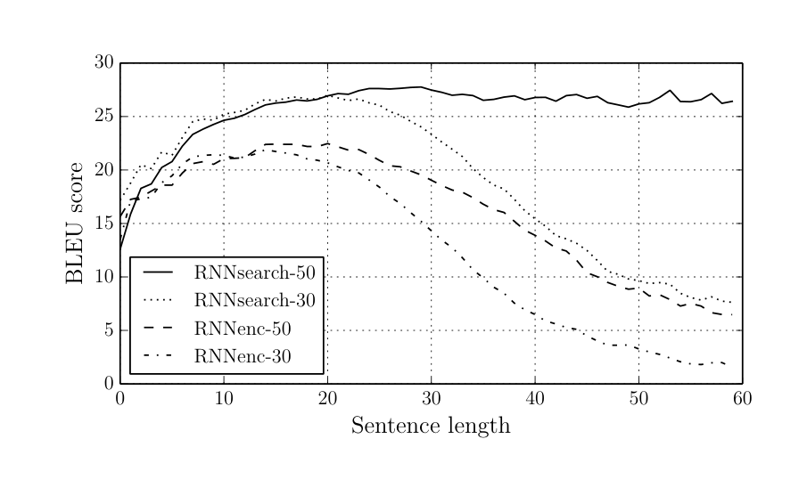
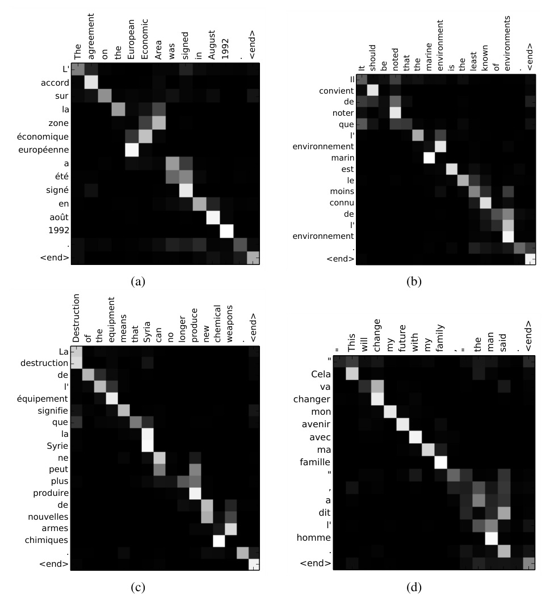

翻译每个词时，回头看原文
Bahdanau、Cho、Bengio 2014 年的论文《Neural Machine Translation by Jointly Learning to Align and Translate》做了一件事：编码器不再把整句压成一个向量，而是给每个词留一个向量；解码器每写一个词，就自己决定回头看原文的哪几个词。这个「边写边回头看」的机制，后来被叫作注意力。
1要解决的问题
写每个词，都只能看同一个向量
编码器-解码器的写法在 002 讲过：一个 RNN 把原文读完，压成一个固定长度的向量 v，另一个 RNN 只凭这个向量写出译文。
002 自己在结论里已经指出，这是信息瓶颈。003 要去掉的就是它。
为什么长句会垮
一个向量的大小是人事先定好的，不随句子变长。5 个词的句子和 30 个词的句子，要装进同样大的容器。
先分清哪些是事实，哪些是推测：
- 已有观察：基本的编码器-解码器，翻译质量随句子变长快速下降（Cho 等 2014b 的结果，本文 Figure 2 又看到一次）。
- 作者的推测：原因是固定向量这个瓶颈。原文用的词是 conjecture，推测。
- 本文要检验的：去掉瓶颈后，长句应该变好。结果在后面证据一节的「结论二」。
注意这仍然是间接证据：论文没有去量「固定向量里到底丢了多少信息」，只是看去掉瓶颈后长句是不是不再垮。
想补救，为什么都不够
下面是我补充的分析，不是论文的论点：
- 把向量做大：参数更多、更难训练，而且大小仍然固定，比训练句更长的句子照样装不下。结构上还是「先全部挤进去，再慢慢取出来」。
- 倒序输入（002 的技巧）：只是把原文开头的词挪近了，译文后半句离原文对应的部分依然很远。它缓解的是训练困难，瓶颈还在。
- 把长句切成短段分别翻译：要硬性切分，切在哪里本身就是难题。原文摘要特意说，本文希望模型自己找相关部分，不用显式切成硬段。
这几条排除之后，对新方法的要求就清楚了：
- 不能把整句压成一个向量。
- 看原文的哪里，要随「当前要写的词」而变。写开头要看原文开头，写结尾要看原文结尾。
- 这个「选择」必须能用梯度训练，否则没法和整个模型一起学。
后面三步的每个设计，都是在满足这三条之一。
2第一步：开卷翻译，写每个词现取一份摘要
和 002 比，整个模型只改了一处：解码器每一步用的原文摘要，从同一个 c 变成了每步一个 cᵢ。其余（RNN 解码器、逐词猜、softmax、束搜索）都沿用。下面分三步回答：cᵢ 怎么取（这一步）、为什么取的方式必须是「软」的（第二步）、编码器的向量为什么要双向（第三步）。
做什么：开卷翻译
你翻一句长英文。002 的方式像是：把整句读一遍，合上书，凭脑子里一份固定大小的摘要往下写。句子越长，摘要越装不下。
003 的方式是开卷：写每一个词时，眼睛回到原文，看着最相关的那几个词写。
写 zone 时盯着 Area，写 l' 时盯着 the 和 man。看哪里，是模型自己学出来的，没有人告诉它。
原文里这件事不叫注意力。标题和摘要用的词是 align（对齐）和 (soft-)search（软搜索），「attention」只在 3.1 节很轻地出现了一次（「直观上，这实现了一种注意力机制」），作为这类方法的统称是后来才通行的。
怎么取：打分、变成权重、加权求和

「按权重加起来」具体分三步：
- 打分：解码器带着「我已经写到哪了」去问原文的每个词：现在，你和我有多相关？每个词得到一个分数 e。
- 变成权重：把分数用 softmax（001 讲过）变成权重 α，全是正数，加起来等于 1。分数高的，权重大得多。
- 加权求和：每个词的向量乘上自己的权重，加起来，得到这一步专用的摘要 cᵢ。
有两处值得多想一下。第一，打分用的是上一步的状态 sᵢ₋₁，不是 sᵢ：因为 sᵢ 要靠 cᵢ 才能算出来，而 cᵢ 要靠打分，用 sᵢ 打分就循环了。第二，Uₐhⱼ 和 i 无关，所以每个原文词只需算一次，写每个词时只需新算 Wₐsᵢ₋₁，对齐模型本身并不贵，贵的是每个译文词都要和所有原文词算一遍。
这三步在因果链里的作用：让解码器每一步自己决定看哪里（要求 2），并且从打分到加权求和都是连续的数学运算，所以梯度能一路传回去（要求 3，下一步）。
取到之后，解码器怎么用它
取到 cᵢ 之后，解码器怎么用它？先看新旧的差别。002 里，每一步的条件里是同一个 c；003 里变成了每步各一个 cᵢ，而且 cᵢ 同时参与「更新笔记 sᵢ」和「选出下一个词 yᵢ」。
这一步的作用：让 cᵢ 真正进入「写哪个词」的决策。整篇论文的核心改动，就是式子里 c 多了下标 i。如果把 cᵢ 固定成编码器最后一个状态，模型就退化回旧的 RNNencdec，所以旧模型是它的特例，两者能公平对比。
式子里的 f 和 g 各有一个零件：GRU 是 LSTM 的精简版，用一个「旋钮」决定旧笔记保留多少、换成多少新内容，目的和 LSTM 一样，让信息和梯度传得更远。maxout 是输出层的一种激活函数：同时算几个候选，只取最大的那个。它们都是工程选择，不是本文的主角。需要精确写法的，看附录 B。
这一步对着上面的毛病：信息不必再全挤进一个向量，而是分散在每个词的向量里；写每个词时看哪里，随「当前要写的词」而变（要求 1、2）。三个打分与加权的式子、cᵢ 进入解码器的式子，精确写法见附录 A（原文 Eq. 4–6 和附录 A.1.2）。
3第二步：取的方式要「软」，才能用梯度训练
硬的选法为什么不行
「对齐」在传统统计翻译里早就有：先用统计模型推断「法文第 i 个词对应英文第 j 个词」。那是一个硬的选择，一个目标词只对应一个源词（或者没有）。
硬选择像一个开关，只有「选这个」和「选那个」，没有中间状态，梯度没法告诉你该往哪边调；另外硬对齐是隐藏的，没有标准答案，计算也复杂（展开见附录 C）。
软的做法：每个词都给一个权重
003 的做法是：不选一个，而是对所有源词都给一个权重（就是图 3 里的 α）。这样 cᵢ 是 α 的连续函数，损失对 α 有梯度，一路反传给对齐小网络的参数。对齐不再是隐藏变量，训练时没有任何「哪个词对哪个词」的标注，它是为了把翻译译好，被顺便学出来的。
原文还给了一个概率式的说法：把 αᵢⱼ 看成「写 yᵢ 时和 xⱼ 对齐的概率」，cᵢ 就是对所有可能对齐取的期望。硬对齐是以概率 1 选一个，软对齐是带着概率把所有候选平均一下。
软对齐还有一个额外的好处。原文 5.2.1 举了 [the man] → [l'homme]：the 在法语里可以译成 le、la、les、l'，取决于后面那个词。硬对齐要把 the 单独对到 l'，只看 the 一个词做不出判断；软对齐写 l' 时可以同时看 the 和 man。它也自然处理源词、目标词数量不一样的情况，不用硬把某些词对到「空」。
我补充的：论文没有和硬对齐的方案做过对照实验，「软优于硬」在本文里主要是设计层面的论证，不是实验结论。
这一步对着要求 3：从打分到加权求和处处连续，所以「看哪里」可以和翻译一起用反向传播训练。softmax 那条式子见附录 A（原文 Eq. 6），硬选择为什么没法训练的展开见附录 C。
4第三步：编码器的向量要左右都看过
为什么要双向
cᵢ 是 hⱼ 的加权和，所以每个 hⱼ 最好把「这个词在整句里的意思」都带上。但普通 RNN 从左读到右，读到第 j 个词时，hⱼ 只知道前文。读到 man 时，它还不知道后面有没有 who 引导的从句。
办法很朴素：请两个人读。一个从头读到尾，一个从尾读到头，然后把两个人对第 j 个词的笔记并排放在一起。
把两个方向的向量首尾拼起来，就是每个词最终的 hⱼ。（各 1000 维，拼起来 2000 维，精确写法见附录 A。）
这样做的作用：让每个 hⱼ 都「左右都看过」，对齐小网络和解码器才有足够的信息，判断「写到这里，这个词值不值得看」。作者还解释，RNN 更擅长记住最近读到的东西，所以 hⱼ 会以 xⱼ 周围的词为主。这是作者的解释，论文没有实验去验证。
这一步对着的毛病：单向 RNN 的 hⱼ 只含前文，写 l' 这类要看后文才能定的词时信息不够。双向之后，第二步里的软对齐才有足够好的向量可取。（本页没有对照实验分开双向与注意力各自的贡献，见后面「局限」。）
5证据：三个结论
英译法，WMT'14 数据。对手是旧的 RNNencdec，用同样的数据、同样的训练流程各训练两次：只用不超过 30 个词的句子训练，叫 -30；不超过 50 个词的，叫 -50。再加一个传统系统 Moses 当参照。下面只看三个能支撑主线的结论，其余细节（完整结果表、训练统计、读数字的注意事项）收在附录 E。
原文第 1 节预告的结果有三条，下面逐条看：
- 每个句长上都比不带注意力的旧模型好，长句不再垮；
- 用更短句子训练的带注意力模型（RNNsearch-30），甚至超过用更长句子训练的旧模型（RNNencdec-50）；
- 学到的「看哪里」可以画出来，和人的直觉一致。
结论一：BLEU 更高
- 同一个限制下，注意力全面胜出，差距大到不是调参能解释的。
- RNNsearch-30（21.50）比 RNNencdec-50（17.82）还高。用更短句子训练、带注意力的，打败了用更长句子训练、不带注意力的。原文拿这一点进一步印证注意力的作用。
- 和 Moses 比，这一列还没赢。只看不含生词的句子，才与 Moses 相当，口径见最后的延伸。
结论二：长句不垮了（全篇最重要的证据）
前面「为什么长句会垮」留下的假说是：固定向量会在长句上垮。如果这个假说对，去掉瓶颈的模型，在长句上应该明显更好。Figure 2 就是这个检验：横轴是句子长度，纵轴是 BLEU。

这个结果和假说的预测一致。作者也给了一个直观的例子：一句 30 多个词的话，旧模型前半句译对，译到后半段就偏离了原意，把「基于他作为医院医护人员的身份」译成了「基于他的健康状况」，末尾的信息没存住，只能靠语言惯性编一个像样的结尾。
要保留一点谨慎。图只显示相关，不能排除别的因素：RNNsearch 同时还有双向编码器，参数也更多。原文说这「证实了我们的假设」，我补充的是：严格地说，是「与假设一致」。
结论三：学到的对齐合理，而且可以读
训练时没有任何人告诉模型「哪个词对哪个词」。那它到底有没有在看对的地方？把每一步的权重 α 画出来就知道。先看一个小例子，教你怎么读热图：

三个提醒：对齐是学出来的，没有任何人工标注参与训练；这是定性证据，只是看着合理，没有用人工对齐去做量化评估；权重高也不一定等于「真的被用来做决定」，这是我补充的提醒。
作者的结论
不必把所有信息塞进一个向量。让解码器需要什么，就去取什么。
整条因果链回头看一遍：固定向量装不下长句 → 所以不压成一个向量，每个词留一个 → 所以写每个词时要按需取 → 所以取的方式必须是「软」的、能用梯度训练 → 所以编码器的每个向量要左右都看过。
6局限
作者承认的局限：生词（UNK）仍是明显短板，留给未来的挑战；对每个译文词都要算所有原文词，计算量随句长平方增长。翻译的句子多半只有 15 到 40 词，影响不大，但可能限制它用在别的任务上（6.1 节）。
我补充的局限（原文没当局限讨论）：没有消融实验，分不清双向和注意力各自的功劳；只做了英法一个语言对；对齐热图是定性证据；对比的旧模型较弱，换成 002 那样的强基线，差距会小多少，本文给不出。
作者列出的这两条局限，后来各自的去向见附录 G。
附录 · 想深入再看
下面每一块默认折叠，点开看。标题里写了对应原文的第几节。
A · 公式和符号表（原文 3.1 节 Eq. 4–6、附录 A.1.2、3.2 节）
取 cᵢ：打分、变权重、加权求和
上面的白话，原文用三个式子写：
打分用的那个函数 a，原文附录 A.1.2 给了它的具体形式：
| 符号 | 白话 | 对应图 3 里的 |
|---|---|---|
i、j | i 是正在写的第 i 个译文词；j 是原文的第 j 个词 | i 是整张图（每写一个词重来一次）；j 是三行 |
hj | 原文第 j 个词的向量（原文叫「标注」） | 左边每行的 [1, 0] 之类 |
si−1 | 解码器上一步的状态，概括「我已经写了什么、还缺什么」 | 图里没画，它是打分时的「提问者」（图 0 的虚线） |
eij | 写第 i 个词时，原文第 j 个词有多相关的分数 | ① 列的 1.91、0、0.54 |
αij | softmax 之后的权重，全为正，每个 i 下加起来等于 1 | ② 列的 0.71、0.11、0.18 |
ci | 这一步专用的原文摘要，大小和一个 h 一样 | ③ 列最下面的 [0.80, 0.20] |
a | 打分的小网络，输入 s 和 h，输出一个数 | ① 列的计算过程（图里只画了结果） |
Wa、Ua、va | 这个小网络的参数：W、U 把 s 和 h 变到同一个空间再相加，v 把结果压成一个分数。都是学出来的 | 同上，在 ① 的计算里 |
tanh | 弯一下的非线性函数（001 讲过）。没有它，两项相加还是线性的，表达力不够 | 同上 |
cᵢ 进入解码器：新旧对比与原文 Eq. 4
完整写出来是原文的 Eq. 4：
| 符号 | 白话 | 对应图 0 里的 |
|---|---|---|
yi | 要写出的第 i 个译文词 | 右下角的 yᵢ |
x | 整句原文（x₁…xT） | 最下面一排 |
si | 写完这个词之后，解码器的新笔记（隐藏状态） | 右边的 sᵢ 方块 |
f | 更新笔记的规则：旧笔记 + 上一个写出的词 + 这一步的摘要 → 新笔记。本文用 GRU | sᵢ₋₁ 到 sᵢ 的那根箭头 |
g | 从这些材料算出「下一个词是谁」的概率分布（接 softmax），本文用 maxout 层 | sᵢ 往上到 yᵢ 的那根线 |
ci | 这一步的原文摘要，同时参与更新笔记和选词 | 从加号流到解码器的那根粗线 |
双向编码器：把两个方向拼起来
精确写法是把两个方向的向量首尾拼起来：
| 符号 | 白话 | 对应图 5 / 图 0 里的 |
|---|---|---|
前向 hj | 从第 1 个词读到第 j 个词的笔记，只含前文 | 「前向」箭头那一排 |
后向 hj | 从最后一个词读回第 j 个词的笔记，只含后文 | 「后向」箭头那一排 |
[ ; ] | 把两个向量首尾拼成一个更长的。各 1000 维，拼起来 hⱼ 是 2000 维 | 每个词上面的 h 方块 |
B · GRU 和 maxout 的完整公式（原文附录 A.1.1、A.2.2）
GRU：f 里面是什么（原文附录 A.1.1，以解码器为例）
| 符号 | 白话 |
|---|---|
e(yi−1) | 上一个写出的词的词向量（001 的「坐标卡」，620 维） |
zi：更新门 | 0 到 1 的旋钮，决定每一维笔记「换成新的」的比例 |
ri：重置门 | 算新内容时，旧笔记参与多少 |
s̃i | 候选的新笔记 |
σ、⊙ | σ 是输出 0 到 1 的 sigmoid；⊙ 是逐维相乘 |
Cz ci 等 | cᵢ 同时进入两个门和候选：「什么时候更新、更新什么」都能参考原文。编码器里没有 cᵢ，这几项去掉 |
最后一行是关键：新笔记是旧笔记和候选的加权平均。示意：旧 [0.8, 0.8]，候选 [0.2, −0.5]，z = [0.1, 0.9]，新笔记 = [0.74, −0.37]。第一维几乎保留，第二维几乎换新。加法路径让梯度能传远，和 LSTM 的传送带同理。原文叫它 gated hidden unit，「GRU」是后来通行的名字。
maxout：g 里面是什么（原文附录 A.2.2）
| 符号 | 白话 |
|---|---|
t̃i | 用「上一步笔记、上一个词、本步摘要」三样东西算出的 1000 维向量，说明选词时同时参考这三样 |
ti,j | 相邻两个数一组，取较大的，1000 维变成 500 维。示意：[0.3, −0.5, −1.0, −0.2] → [0.3, −0.2] |
Wo 与 exp | 再乘一个矩阵，对所有目标词做 softmax，得到每个词的概率 |
这相当于从状态到词概率之间多放了一个隐藏层。原文没有单独做实验去检验 maxout 的贡献。
C · 概念注解：为什么硬选择没法用梯度训练（原文 3.1 节）
训练靠梯度：错了，就看「往哪个方向微调一点点，错误会变小」。硬选择是一个开关，只有「选这个」和「选那个」，没有中间状态。把选择从词 2 改到词 3，是一次跳变，不存在「往词 3 偏一点点」，梯度就没法告诉你该往哪边调。另外，硬对齐是隐藏的，没有标准答案，要对所有可能的对齐求和或采样，计算很复杂。
D · 和旧方法（002 / RNNencdec）的对比（原文 3.1 节、第 4 节）
| 002 / RNNencdec（旧） | 003 / RNNsearch（本文） | |
|---|---|---|
| 编码器输出 | 1 个固定向量 | 一排向量，原文有几个词就有几个 |
| 编码器方向 | 单向 | 双向 |
| 解码器看原文 | 全程同一个 c | 每步一个新的 cᵢ，自己决定看哪里 |
| 长句信息放在哪 | 全挤在一个向量里 | 分散在各个 h 里，按需取 |
| 代价 | 无 | 每个译文词要和每个原文词打一次分，计算量约为 Tx × Ty，随句长变长平方增长 |
| 能不能看明白 | 向量内部看不出 | 权重 α 可以画成热图（正文证据一节的结论三） |
要提醒的是，003 里的 RNNencdec 不是 002 那个模型（一层，单向，没有倒序，没有集成）。它是 RNNsearch 去掉注意力后的特例，才能公平对比。
E · 完整结果表和读数字的注意事项（原文 Table 1、Table 2，Moses 对比见 5.1 节）
Table 1 完整版。「No UNK」列只评估原文和参考译文里都没有生词的句子，并且禁止模型输出 [UNK]。
| 模型 | All | No UNK |
|---|---|---|
| RNNencdec-30 | 13.93 | 24.19 |
| RNNsearch-30 | 21.50 | 31.44 |
| RNNencdec-50 | 17.82 | 26.71 |
| RNNsearch-50 | 26.75 | 34.16 |
| RNNsearch-50⋆（训练更久） | 28.45 | 36.15 |
| Moses | 33.30 | 35.63 |
- 和 Moses 比，要看列。All 列：RNNsearch-50 比 Moses 低 6.55 分，⋆ 版本低 4.85 分。No UNK 列：RNNsearch-50 低 1.47 分，⋆ 版本 36.15 超过 35.63。所以原文的措辞是「相当」（as high as），不是「超过」。
- All 和 No UNK 的落差，就是生词的代价。RNNsearch-50 掉 7.4 分，Moses 只掉 2.3 分。神经模型只有 3 万词的词表，遇到罕见词只能输出 [UNK]。这是本文最明显的短板。
- Moses 用了额外 418M 词的单语语料，RNNsearch 只用了平行语料，所以「相当」并不容易（原文 5.1 节）。
- ⋆ 版本训练更久：252 小时、5.0 个 epoch，比另几个多近一倍。它的领先来自训练更久，不该和同时长的 RNNencdec 直接比。
- 和 002 的数字不可比。002 是 34.81（5 个 4 层 LSTM 集成），003 的 28.45 是单个一层 GRU 模型；003 里的 RNNencdec 也不是 002 的模型。两篇是两条路线：002 靠更深加集成把固定向量推到极致，003 靠换结构去掉瓶颈。真正的结构性证据在 003 内部：同样数据、同样流程下的 RNNencdec 对 RNNsearch。
- 没有消融实验。双向编码器和注意力各自贡献多少，没测。Table 1 的差距是「注意力 + 双向 + 编码器参数翻倍」的合力。只做了英法一个语言对。
Table 2：训练统计。
| 模型 | 更新次数 (×105) | epoch | 小时 | 验证 NLL |
|---|---|---|---|---|
| RNNenc-30 | 8.46 | 6.4 | 109 | 53.0 |
| RNNenc-50 | 6.00 | 4.5 | 108 | 43.6 |
| RNNsearch-30 | 4.71 | 3.6 | 113 | 47.2 |
| RNNsearch-50 | 2.88 | 2.2 | 111 | 38.1 |
| RNNsearch-50⋆ | 6.67 | 5.0 | 252 | 35.2 |
- 同样约 110 小时，RNNsearch-50 只做了 2.88×105 次更新，RNNenc-50 做了 6.00×105 次：每次更新更贵（对齐要算 Tx×Ty，编码器是双向）。但验证 NLL 更低（38.1 对 43.6），训练得更少，效果仍更好。
- NLL 是每句的平均负对数概率，30 和 50 的模型句长分布不同，不能横向比较。
- 正文说训练「约 5 天」，Table 2 的 108 到 113 小时约合 4.5 天，⋆ 版本 252 小时约 10.5 天。两处口径略有出入，以 Table 2 为准。
- 附录 C 的长句例子是作者挑选的，只能作旁证，不能替代 Figure 2 的整体统计。
F · 相关工作与当时的背景（原文第 6 节、第 1 节）
相关工作
- 神经网络在翻译里长期当配角。原文 6.2 节说，从 Bengio 等 2003（001）开始，神经网络在翻译里大多只是给传统系统提供一个特征，或者给候选译文重新排序。本文自称是对此前工作的彻底背离：不当零件，整个系统自己翻译。
- 同一个团队的前几步。Cho 等 2014a 提出 RNN 编码器-解码器和 GRU，2014b 观察到长句变差，Pouget-Abadie 等 2014 尝试自动切段。本文是这条线上的第三个回应：不切，让模型自己找。
- Graves 2013 的手写体合成也用「预测权重」的方法，但位置只能单调向前。作者指出，这对翻译是严重限制，因为翻译常需要长距离重排（比如英译德）。软对齐没有这个限制。
- 同期的 002（Sutskever 等）走的是另一条路：靠更深的网络把固定向量推到极致，没有改结构。
当时的技术背景（2014）
- 神经翻译是新东西：Kalchbrenner 和 Blunsom 2013、Sutskever 等 2014（002）、Cho 等 2014 刚刚提出。
- 3 万词的词表是当时的普遍做法，生词问题还没有通行的解法，子词方法要到后来才出现。
- 作者和 001 的 Bengio 同属蒙特利尔一个组。
G · 后来的发展和前后篇衔接（原文之外）
后来发展到什么程度
下面是后世评价，不是原文内容。
- 成为神经翻译的标配。带注意力的编码器-解码器很快取代了不带注意力的版本，也被用到图像描述、语音识别等任务，说明「按需取信息」不限于翻译。
- 骨架还活在今天的大模型里。「用当前状态去给所有候选打分，softmax 成权重，对内容加权求和」，这仍是注意力层的基本形式。本文这个形式，后来被叫作加性注意力，004 会换成更简单的点积写法。
- 留下的两个问题都有后续。生词 → 子词切分（007）；每个译文词都要算所有原文词、RNN 又必须串行 → 004 Transformer 把这种「按需取信息」做成整个模型的基础，同时去掉了 RNN。
- 相对准确的定位：本文不是注意力的唯一起源，类似思想（如 Graves 2013）更早出现。本文的贡献是在机器翻译里，把可微的软对齐和端到端训练结合起来，动机清楚、实验扎实、热图直观，所以影响最大。
前后篇衔接
继承自：002 Seq2Seq（编码器-解码器、逐词概率、束搜索、「瓶颈在固定向量」的诊断）；001 NPLM（神经网络参数化条件概率、softmax、词向量）；Cho 等的 GRU 和长句观察。
对 002 的推进：c 变成 cᵢ，每个译文词一份；一个向量变一排向量；对齐可微、可训练；长句不再垮，还得到了能读的对齐热图。002 靠倒序缓解的长距离问题，在这里被结构性地绕开：注意力直接连接任意两个位置。
留下的问题：
- 仍用 RNN，必须串行；对齐还有 Tx × Ty 的开销 → 第 004 篇 Transformer，完全用注意力，还让注意力作用在序列内部
- 词表有限、生词 → 子词切分（第 007 篇）
- 优化器用 Adadelta → 后来的标配 Adam（第 005 篇）